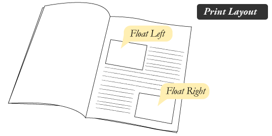
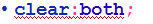

Sejarah Float
Dulunya, ketika para developers pertama kali melakukan transisi dari HTML layout berbasis tabel ke layout tanpa tabel, salah satu CSS property yang memberikan peran yang sangat penting, css property itu adalah float.
Untuk materi kali ini, kita akan membahas apa itu Float dan bagaimana float ini memberikan efek terhadap elemen.
Agar lebih memahami bagaimana float digunakan, silahkan amati gambar dibawah ini.

Pada print design, gambar pada halaman di-set sedemikian rupa sehingga teks/tulisan berada rapih disekitar gambar tersebut.
Pada web design, elemen halaman yang diberi properti CSS float berprilaku sama seperti gambar pada print design diatas.

Tujuan CSS Float
- Berfungsi untuk memaksa sebuah elemen menjadi berada di kiri atau dikanan halaman.
- Elemen yang berada setelah elemen yang diberi float akan terpengaruh fungsi float tersebut.
- Elemen yang berada sebelum elemen yang diberi float tidak akan terpengaruh.
- Property:

- Untuk me-nonaktifkan fungsi float gunakan:

Contoh Float Left

Contoh Float Right

CSS Float sebagai Struktur Halaman
Selain contoh-contoh diatas, float juga dapat digunakan untuk membuat struktur halaman seperti gambar dibawah ini:

Menghilangkan Float
untuk menghilangkan fungsi float pada halaman, gunakan property clear. Sebuah elemen yang diberi property clear tidak akan pindah posisi untuk mengisi kekosongan pada elemen diatasnya. Ilustrasinya dapat dilihat pada gambar dibawah ini:
Gambar diatas menunjukkan bahwa ukuran dari sidebar lebih kecil daripada lebar main content. Elemen footer dibawahnya melihat masih ada ruang kosong dibawah sidebar yang bisa ditempati, sehingga ruang kosong tersebut diisi oleh footer. Untuk memperbaiki masalah ini, digunakan sintaks berikut:
sehingga hasilnya seperti gambar dibawah ini:
Latihan 4a
buka file .txt dibawah ini, lalu copy kan isinya dan simpan dengan nama:
L4a<NRP>.html>> download file latihan 4a <
Buatlah file css untuk menghias file html tadi dengan spesifikasi dibawah ini, simpan dengan nama:
L4a<NRP>.cssbody
- jenis font : georgia
- warna background: #999
p
- margin atas: 0px
- margin bawah: ?
- margin kanan: 0px
- margin kiri: ?
id page-wrap
- lebar : 700px
- margin atas bawah : 0px
- margin kiri kanan : auto
- padding untuk ke-empat sisinya : ?
id content
- width : 460px
- margin kanan : 20px
- padding kanan : 20px
- tebal border kanan : 1px
- tipe border kanan : solid
- warna border kanan : #333
- tinggi minimal : ?
id sidebar
- lebar : 180px
id footer
- tipe paragraf : rata tengah
- warna background: #333
- jenis huruf : verdana
- warna huruf : putih
- lebar : 740px
- tinggi : 40px
- margin atas bawah : ?
- margin kiri kanan : auto
- padding atas : 20px
sehingga hasilnya seperti ini.
Latihan 4b
modifikasi file html dan css pada latihan 4a, simpan dengan nama :
L4b<NRP>.htmlL4b<NRP>.css
modifikasi file css dengan spesifikasi dibawah ini:
- tambahkan atribut/properti float dengan value left untuk id content dan id sidebar
- buat kelas baru dengan nama clear dan isi atribut/propertinya dengan clear dan value both
sehingga hasilnya seperti ini.
Latihan 4c
modifikasi file html dan css pada latihan 4b, simpan dengan nama :
L4c<NRP>.htmlL4c<NRP>.css
modifikasi file css / html dengan spesifikasi dibawah ini:
Tambahkan kelas kotak pada file css dengan spesifikasi sebagai berikut:
- lebar : 80px
- tinggi : 100px
- margin atas : ?
- margin kanan : 10px
- margin bawah : ?
- margin kiri : 0px
- float : ?